Equalscope
EqualscopeNot equalizing alone.
Breathing training too.
Equalizing pressure is measured and analysed live, and you are told what to fix.
CO₂·O₂ tables are run and recorded with voice guidance.
No phone, no app.
Dry-land training aid. Not waterproof. Not a medical device.

The days you actually get in the water are fewer than you think.
You don't only improve in the water. Dry-land training comes down to two things — equalization and breathing. But equalization gave you no way to see whether it was working, so you went by feel; and breathing training meant carrying a phone to run an app.
Equalscope puts both in one device. Turn it on and pick a mode.
Two kinds of training, one device
You pick the mode when you turn it on — watch your equalizing, or run a breathing table.
Both go from measuring to recording and analysis inside the device.
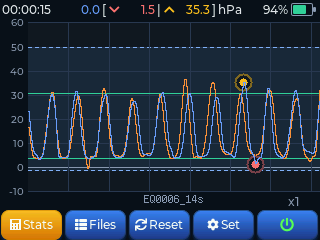
Equalizing
Pressure you could never see, as a live graph at 40 samples per second. When the session ends it summarises count, rhythm and speed, and estimates the technique. Keep a good session as a reference graph to overlay, and it will compare that against your current one.
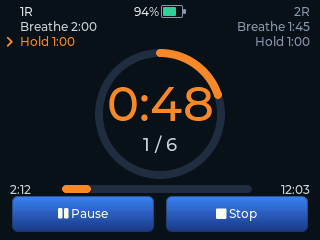
Breathing training (CO₂ · O₂)
Follow a CO₂ or O₂ table through rounds of breathing and holding. English voice guidance calls the phase and the time left, so you can train with your eyes closed, and every round is kept as a record.
Nothing extra to pack — no separate tool, no phone for an app.
One device in the bag.
Breathing training arrived as a firmware update, and the promise it came
from — a device that grows with freedivers — has not changed.
Everything happens on the device
No app to launch, no pairing, no phone screen going to sleep in the middle of a class. Turn it on and measure.
Works on its own
No smartphone, no PC, no Bluetooth pairing. The device measures, draws, stores and analyses by itself.
40 samples per second
A smooth, continuous curve with no lag — fast repeated equalizations are captured as they happen.
Automatic analysis
After each session it summarises count, rhythm, rise and fall speed, and estimates which equalization technique the pressure pattern looks like.
It all fits on one screen
A 2.8-inch touch screen carries the live graph, the analysis and the files. Pinch to zoom, swipe to scroll through the curve.
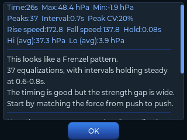
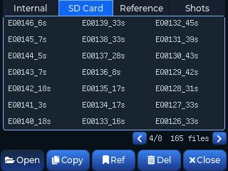
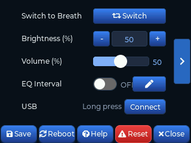
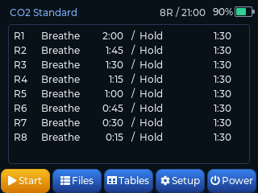
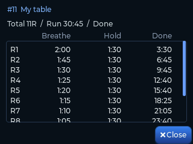
What it does
Features you pick up as you improve — use what you need now, and the rest comes into play later.
Most of them are not found on existing training devices.
Live pressure graph
40 samples per second draw a smooth, unbroken curve. The device measures and draws it itself, so there is no lag — even fast repeated equalizations are caught.
Automatic analysis & advicenot on other devices
When a session ends the device summarises count, rhythm and speed, and estimates your technique from the pressure pattern. You review training with numbers, not with feel.
Reference overlay & comparisonnot on other devices
Save a good session as a reference and see it overlaid on your live graph. It doesn't stop at looking — the device compares the two and tells you what changed, against a coach's model run or against your own earlier one.
Every session saved
Sessions are stored automatically as CSV — on internal memory or a microSD card. Open them in Excel or Google Sheets and analyse them any way you like.
Three-finger screenshotnot on other devices
Touch the screen with three fingers and it saves exactly what you see — ready to use for student feedback or for sharing a record.
Firmware update from SDnot on other devices
Drop the file on an SD card and power on — the update runs by itself. No PC software, no app, and new features keep arriving after you buy.
High / low pressure alarmnot on other devices
A sound tells you when you leave the range you set, so you don't have to keep watching the screen.
EQ interval trainernot on other devices
Build an alarm sequence — "every 2 s × 5, then every 4 s × 5" — to rehearse the equalization rhythm of a descent. Alarm points are marked on the graph so you can compare plan against reality.

Calibrated pressure valvenot on other devices
A dial with printed numbers. Repeat the exact same setting every time. Simulates the shrinking air volume of depth on dry land — especially useful for mouthfill.
Seven themes · English / Koreannot on other devices
Seven colour themes, with the menu in English or Korean. Brightness, alarms and auto power-off are all set on the device itself.
CO₂ · O₂ table trainingbreathing mode
Four tables are built in, and you can keep up to 50 of your own. Set the number of rounds, the starting time and the step — the table builds itself, and shows you the last round and the total time before you commit.
English voice guidancebreathing mode
Phase changes and remaining time are announced out loud, so you can train with your eyes closed. The first hold starts the way a competition does (3 · 2 · 1 → official top).
Built around your own PBbreathing mode
Choose what percentage of your static PB to start from and the hold times are calculated for you. Not someone else's table — one that fits your body.
Competition-style start (EQ)not on other devices
Equalization sessions can start like a competition too. Measurement, stopwatch and intervals all begin at the official top, so the starting routine becomes part of the training.
Seven colour themes — make the screen yours
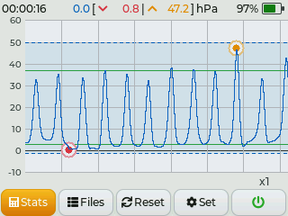
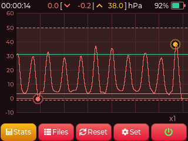
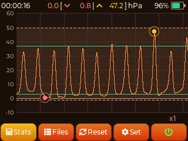
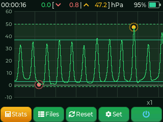
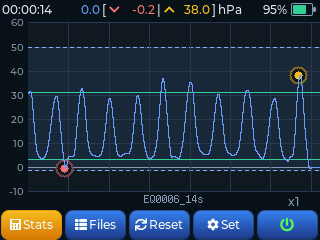
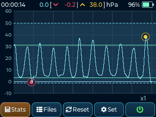
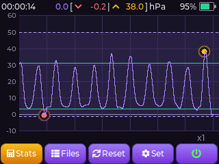
It recognises how you equalize
From the shape of the pressure curve, Equalscope estimates which of six equalization patterns your session resembles. It reads pressure, not anatomy — treat the result as a reference, not a diagnosis.


What you use changes as you improve
Getting your equalization to work is not the finish line — it is where it starts.
Each stage needs something different, so the features you reach for change too.
From Valsalva to Frenzel
The step where most divers get stuck. Feel alone rarely gives you the answer, and this is where the graph and the analysis help. You can also load your instructor's good run as a reference and compare it with your own.
Mouthfill and negative pressure
Once Frenzel works, the question becomes how cleanly you do it — and then mouthfill. Negative pressure is hard to feel, but it stays on the graph. CO₂ · O₂ table training runs on the same device.
Deeper dives · instructors · athletes
Simulating depth on dry land. The calibrated valve repeats the same condition exactly, and intervals match your descent rhythm. Screens and records are ready to show students.
At every stage — every session is saved, and can be compared with any earlier one.
Not a device you fix one thing with and put away, but one that stays with you for as long as you freedive.
Training continues even in the stretches when you cannot get to the water.
What you get
Two colours to choose from. Everything needed to start training on land.


Main unit & tube
The device, a silicone tube and a metal fitting. A pressure valve with a marked dial lets you repeat the same setting exactly.
Equalvent
The nose piece you press against a nostril. Sold as a set with a fitting, a lanyard and a balloon.
Unpack, connect, measure
Three steps from the box to an analysis — the video shows the whole thing.
Connect
Click the tube into the device, then attach the Equalvent to the other end.
Measure
Press start and equalize. Your pressure is drawn as a live graph.
Review
The session saves itself. The analysis screen gives you the statistics and a short piece of advice.
Specifications
| Model | EQ-28 |
|---|---|
| Display | 2.8" colour touch LCD, 320 × 240 |
| Size | Device 90 × 77.6 × 25 mm · Case 160 × 100 × 70 mm |
| Measurement | Pressure sensor, 40 Hz sampling, auto zero calibration at power-on |
| Storage | Internal memory + microSD slot — CSV sessions and PNG screenshots (SD card not included) |
| Audio | Speaker — pressure alarms and EQ interval cues |
| Power | Built-in 3.7 V 1,000 mAh Li-Po, USB charging |
| Connection | USB file transfer to PC · firmware update from SD card |
| Connector | 4 mm pneumatic quick connector |
| Languages | English / Korean |
| In the box | Device · Equalvent mouthpiece · tube · calibrated pressure valve · USB cable |
| Use | Dry-land training only · not waterproof · not a medical device |
Built-in battery · Storage
A rechargeable battery is built in, so you can start training without a cable.
In return, please keep one rule — do not leave it in a parked car.
A car interior can reach 60–70°C in summer. Long exposure to heat can make the battery swell or catch fire, and the case can deform.
Firmware & manual
Copy the firmware file to an SD card and power the device on — it updates itself.
Ordering from outside Korea
Equalscope is made in small batches in South Korea, and each unit is inspected by hand before it ships. We ship internationally on request.
Please note: the device carries Korean radio certification (KC). It is sold as a personal training aid; any import duties or local requirements in your country are the buyer's responsibility.